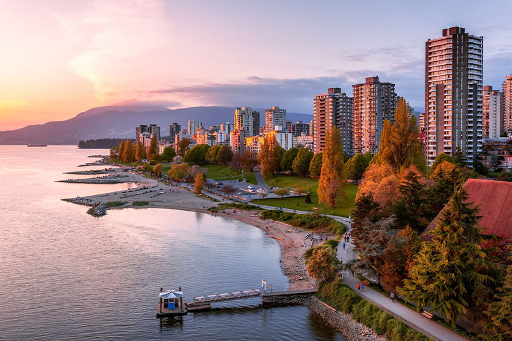

Місце народження:28 жовтня, 2003 року, м.Бахмут
Освіта:НВК №11, м.Бахмут;
Національний технічний університет України "Київський політехнічний інститут імені Ігоря Сікорського", м.Київ
Хоббі:
Улюблені фільми:
Вподобане місто Ванкувер (англ. Vancouver) — місто на західному узбережжі Канади, найбільший населений пункт провінції Британська Колумбія та третій за розміром в Канаді. У 2010 році в Ванкувері проводилися XXI зимові Олімпійські ігри. Дослідницька група Economist Intelligence Unit британського видання Економіст тричі — в 2005, 2007, 2009 роках надавала Ванкуверу звання «найкращого міста Землі»
Населення самого міста — 631 468 особи (станом на 2016 рік), але в Великому Ванкувері (англ. Greater Vancouver) мешкає понад 2,4 млн осіб.
Ванкувер є одним з найтепліших міст Канади в зимовий період. Його клімат за канадськими стандартами помірний і, класифікується як морський, відповідно до системи класифікації Кеппена. У літні місяці спостерігається суха погода, у середньому дощ припадає тільки на один з п'яти днів у липні й серпні. Однак у період з листопада по березень опади бувають майже в половину від усієї кількості днів
